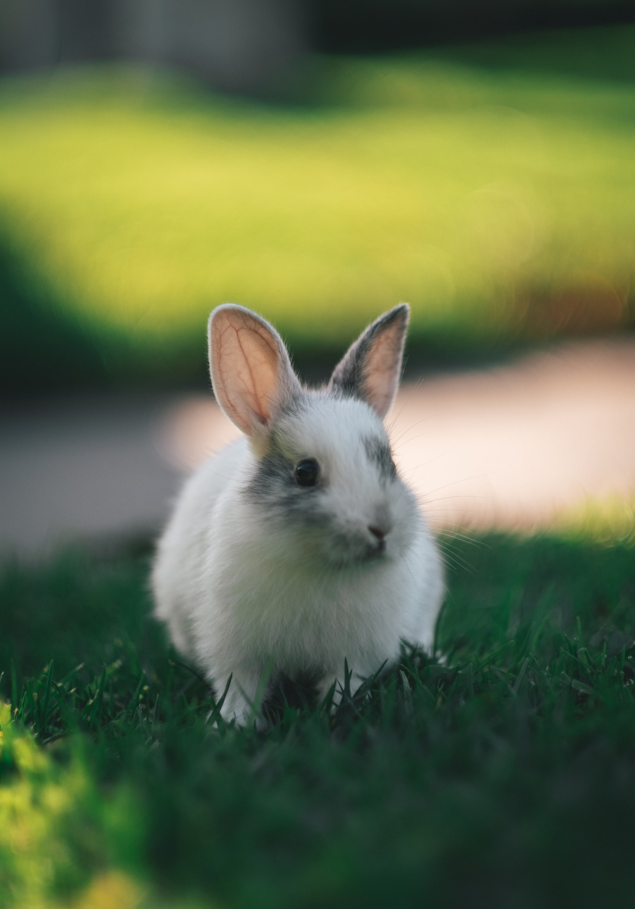

Rabbit Guide
Rabbits make excellent pets, just like our most common pets "cats & dogs" they come in all sorts of colors and sizes. They require certain conditions to keep them happy and healthy. This guide will help you learn all about rabbits, so you and your family can get the most enjoyment out of your pet rabbit.
Would a rabbit make a good pet
When considering a rabbit for a pet, understand your signing up for a long-term commitment. While the average lifespan of a pet rabbit is, according to the House Rabbit Society, about eight to 14 years old, certain breeds of rabbits are known to live longer than others. Just like you may have heard about dogs, smaller rabbits dwarf or mini lops typically live longer than the larger breeds like French lops and Flemish giants.